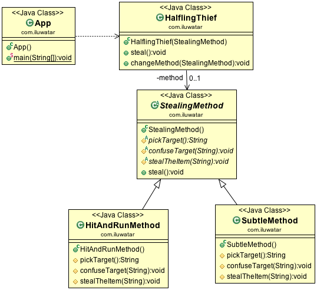
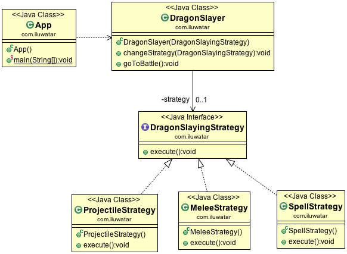
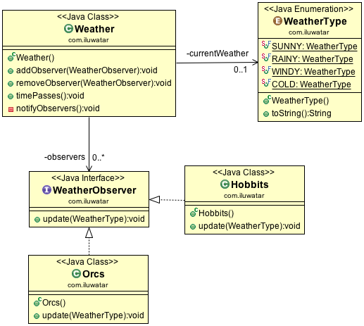

设计模式Head First¶
六大原则：¶
单一职责原则
不要存在多于一个导致类变更的原因，即一个类只负责一项职责。优点是降低类的复杂度，提高代码可读性，提高系统可维 护性，降低变更引起的风险。但当发生职责扩散时，原来的职责R被分为R1和R2，是否需要重构来满足这一原则，需要比较 重构的代价还是在同一个类中职责扩展的代价。
里氏代换原则（Liskov Substitution Principle）
里氏代换原则(Liskov Substitution Principle LSP)面向对象设计的基本原则之一。 里氏代换原则中说，任何基类可以出 现的地方，子类一定可以出现。 LSP是继承复用的基石，只有当衍生类可以替换掉基类，软件单位的功能不受到影响时，基 类才能真正被复用，而衍生类也能够在基类的基础上增加新的行为。里氏代换原则是对“开-闭”原则的补充。实现“开-闭”原 则的关键步骤就是抽象化。而基类与子类的继承关系就是抽象化的具体实现，所以里氏代换原则是对实现抽象化的具体步骤 的规范。在实际应用中，对付父类已经实现好的方法，尽量不要进行重写和重载，保持父类的契约。子类可以扩展父类的功 能，却不能改变父类原有的功能。
- 子类可以实现父类的抽象方法，但不能覆盖父类的非抽象方法；
- 子类可以增加自己特有的方法；
- 当子类的方法重载父类的方法时，方法的前置条件（即方法的形参）要比父类方法的输入参数更宽松；
- 当子类的方法实现父类的抽象方法时，方法的后置条件（即方法的返回值）要比父类更严格；
依赖倒转原则（Dependence Inversion Principle）
高层模块不应该依赖底层模块，二者都应该依赖其抽象，抽象不应该依赖细节，细节应该依赖抽象。这个是开闭原则的基础， 具体内容：针对接口编程，依赖于抽象而不依赖于具体。 想对于细节的多变性，抽象的东西要稳定得多，以抽象为基础的架构也会相对稳定。
接口隔离原则（Interface Segregation Principle）
建立单一接口，不要建立庞大臃肿的接口，尽量细化接口，接口中的方法尽量少。接口尽量小，但是要有限度，接口数量不能 过多；为依赖业务定制接口，其余则隐藏起来；提高内聚，减少对外交互。其实设计模式就是一个软件的设计思想，从大型软 件架构出发，为了升级和维护方便。所以上文中多次出现：降低依赖，降低耦合。
迪米特法则（最少知道原则）（Demeter Principle）
一个对象应该对其他对象保持最少的了解。个类对自己依赖的类知道的越少越好。也就是说，对于被依赖的类来说，无论逻辑 多么复杂，都尽量地的将逻辑封装在类的内部，对外除了提供的public方法，不对外泄漏任何信息。或者说，一个类只与直接 的朋友通信，成员变量、方法参数、返回值都是直接朋友，不要使用陌生的类。
要与非朋友进行通信，就要通过中介或者传递类进行通信，这样的话，如果过分的使用迪米特法则，会产生大量的中介和传递 类，导致系统庞大而负责，具体情况需要进行权衡。
开闭原则（Open Close Principle）
一个软件实体如类、模块和函数应该对扩展开放，对修改关闭。在程序需要进行拓展的时候，不能去修改原有的代码，实现一 个热插拔的效果，避免给原来正确的代码带来新的问题。当软件需要变化时，尽量通过扩展软件实体的行为来实现变化，而不 是通过修改已有的代码来实现变化。 用抽象构建框架，用实现扩展细节。因为抽象灵活性好，适应性广，只要抽象的合理，可以基本保持软件架构的稳定。而软件 中易变的细节，我们用从抽象派生的实现类来进行扩展，当软件需要发生变化时，我们只需要根据需求重新派生一个实现类来 扩展就可以了。当然前提是我们的抽象要合理，要对需求的变更有前瞻性和预见性才行。
简单来说，就以下几点：
1. 开闭原则：对任何可能会修改的地方，使用扩展的方式进行修改；
2. 里氏替换原则：保证良好的开放原则；
3. 依赖倒转原则：不依赖具体实现，基于接口编程，等着对方来call；
4. 接口隔离原则：多个隔离接口，降低耦合；
5. 迪米特法则：减少耦合；
6. 合成服用原则：尽量使用合成/聚合，少用继承；
创建模型（5种）：¶
抽象工厂模式¶
有多个抽象产品线，有一个抽象工厂类，根据不同具体工厂类型和产品类型生产出多种产。
含义：工厂的工厂模式，生产一类工厂（产品族），进而生产产品；

Usage in JDK:
javax.xml.parsers.DocumentBuilderFactory#newInstance()
javax.xml.transform.TransformerFactory#newInstance()
javax.xml.xpath.XPathFactory#newInstance()
工厂模式¶
工厂模式是为了解耦new实例化对象代码所产生的，为的是针对接口的编程，而不是针对实现的编程，将“实现”从“使用”中解耦，也就是将两者完全分离，是工厂模式的核心思想。 抽象工厂方法把每个抽象工厂中的生产对象的方式都改为工厂模式，定义了一组产品的接口，工厂方法就潜伏在抽象工厂里， 依赖倒置原则(Dependency Inversion Principle)的通用原则是：依赖抽象，不要依赖具体类。 google在这方面走的更进一步，实现了guice(音/’dgus/)，解决DI(Dependency Injector)问题，具体请参考guice分析与实现。
场景：日志记录器生成，数据库访问连接生成，连接服务器协议生成；

Usage in JDK:
java.util.Calendar#getInstance()
java.util.ResourceBundle#getBundle()
java.text.NumberFormat#getInstance()
java.nio.charset.Charset#forName()
java.net.URLStreamHandlerFactory#createURLStreamHandler(String) (Returns singleton object per protocol)
java.util.EnumSet#of()
javax.xml.bind.JAXBContext#createMarshaller() and other similar methods
构建者模式：¶
意图：创建复杂对象，私有构造函数，利用静态接口build完成对象的构建。
优点：封装性好，稳定性高，易于扩展。

Usage in JDK:
java.lang.StringBuilder#append() (unsynchronized)
java.lang.StringBuffer#append() (synchronized)
java.nio.ByteBuffer#put() (also on CharBuffer, ShortBuffer, IntBuffer, LongBuffer, FloatBuffer and DoubleBuffer)
javax.swing.GroupLayout.Group#addComponent()
All implementations of java.lang.Appendable
java.util.stream.Stream.Builder
单例模式：¶
关键代码：构造函数是私有的，确保单一对象被创建，静态私有变量实例；
双重检查加锁模式，在getInstance方法中判断对象是否为空，如果为空，对整个类进行加锁，然后创建对象并返回，这样可以避免给整个方法加锁后性能下降的问题。
原型模式（prototype）：¶
生产者拥有一个原型对象，利用clone产生新的对象。
优点：生成对象性能较高，简化对象的创建过程（尤其是大对象）。
java.lang.Object - clone()
结构模型（7种）：¶
适配器模式¶
关键代码：适配器继承或依赖已有的对象，实现想要的目标接口；
不直接拥有被调用者的对象，而是间接拥有，通过适配器类和被调用者类实现同一个接口实现进行调用； 适配器模式的主要目的是解决接口间不兼容的问题,其定义是将一类的接口，转换成客户期望的另一个接口。 适配器让原本接口不兼容的类可以合作无间。 适配器实现目标接口，有一个被适配的类型对象。
example2:
Usage in JDK:
java.util.Arrays#asList()
java.util.Collections#list()
java.util.Collections#enumeration()
java.io.InputStreamReader(InputStream) (returns a Reader)
java.io.OutputStreamWriter(OutputStream) (returns a Writer)
javax.xml.bind.annotation.adapters.XmlAdapter#marshal() and #unmarshal()
装饰者模式¶
含义：只加修饰，绝不继承；
主要解决：为一个加扩展功能时，通过has-a避免过度继承，通过包含一个相同父类避免多继承导致的类爆炸；
拥有一个和自己父类相同的对象，以实现增强自己的目的； 装饰者模式主要是为解决滥用继承带来的代码混乱的问题，例如不同的咖啡配上不同的佐料，不能一一继承; 我们可以使用一个简单的嵌套（装饰者），每加一层佐料，就在外层加一套嵌套，每个类不仅继承自A，并且还有拥有一个A对象; 这样就可以无限的进行扩展，而不会使得代码膨胀，动态地经责任附加到对象上。 当然这样也有缺点，就是外层对象不知道自己含有什么内容，而且包裹层数多了也不利于可读性。
Usage in JDK:
All subclasses of java.io.InputStream, OutputStream, Reader and Writer have a constructor taking an instance of same type.
java.util.Collections, the checkedXXX(), synchronizedXXX() and unmodifiableXXX() methods.
javax.servlet.http.HttpServletRequestWrapper and HttpServletResponseWrapper
javax.swing.JScrollPane
代理模式：¶
含义：不直接访问对象，通过加入中间层访问，但接口形式与直接访问对象相同；
关键代码：实现与被代理类组合；
代理模式就是利用某个抽象类的好的实现代替之前的实现，就是把专业的事情交给专家； 代理模式为另一个对象提供一个替身或者占位符以控制对这个对象的访问。 具体是生成一个代理对象，用户调用它就像调用真正的对象一样，代理对象进行权限和访问控制。 代理和适配器模式的区别在于适配器转换了真正对象的接口，而代理则实现相同的接口。 Java的RMI正式远程代理的一个实现。
java.lang.reflect.Proxy
java.rmi.*
javax.ejb.EJB (explanation here)
javax.inject.Inject (explanation here)
javax.persistence.PersistenceContext
桥接模式：¶
关键代码：抽象类之间的依赖关系（简单的聚合has-a），在实现类中使用这种关系；
主要解决：在有多种可能会变化的情况下，用继承会造成类爆炸问题，使用抽象类的has-a关系，提高扩展性；
example2 .. image:: images/bridge2.jpg
new LinkedHashMap(LinkedHashSet<K>, List<V>)
组合模式:¶
关键代码：树形结构，自己包含一个自己类型的集合；
主要解决：在树型结构的问题中，可以像处理简单元素一样来处理复杂元素，从而使得客户程序与复杂元素的内部结构解耦；
就是一群某个抽象的具体实现像树一样的聚集在这个抽象类之中，其中有一个共同的方法，递归式的调用到每个叶子节点； 组合模式允许你将对象组合成树形结构来表现“整体/部分”层次结构。组合能让客户以一致的方式处理个别对象以及对象组合。 其本质是利用组合形成递归原则，将叶子和子节点一视同仁，进行操作。
java.awt.Container#add(Component) (practically all over Swing thus)
javax.faces.component.UIComponent#getChildren() (practically all over JSF UI thus)
享元模式（FlyWeight)：¶
主要解决：避免创建过多对象，运用共享技术有效地支持大量细粒度的对象；
关键代码：用 HashMap 存储这些对象；
就是一个抽象的具体实现对象的集合，实现对象池的模式；
String字符串与数据库连接池，类似于缓存池；
java.lang.Integer#valueOf(int) (also on Boolean, Byte, Character, Short, Long and BigDecimal)
外观模式（Facade）：¶
主要解决：重写接口，简化复杂接口，为复杂的模块或子系统提供外界访问的模块；
关键代码：在客户端和复杂系统之间再加一层，这一层将调用顺序、依赖关系等处理好；
利用同一的外观类进行封装，降低耦合度； 提供了一个统一的接口，用来访问子系统中的一群接口。外观模式定义了一个高层接口，让子系统更容易使用。
设计原则–最少知识原则：只和你的密友谈话。(减少耦合)
javax.faces.context.FacesContext, it internally uses among others the abstract/interface types LifeCycle, ViewHandler, NavigationHandler and many more without that the enduser has to worry about it (which are however overrideable by injection).
javax.faces.context.ExternalContext, which internally uses ServletContext, HttpSession, HttpServletRequest, HttpServletResponse, etc.
行为模型（11种）：¶
命令模式（Command）：¶
主要解决：在软件系统中，行为请求者与行为实现者通常是一种紧耦合的关系，但某些场合，比如需要对行 为进行记录、撤销或重做、事务等处理时，这种无法抵御变化的紧耦合的设计就不太合适；
关键代码：1、received 真正的命令执行对象 2、Command 3、invoker 使用命令对象的入口；隐藏和包装；
某个对象不直接调用其他对象，而是通过Command解耦的方式进行调用，command.excute(target)进行调用； 命令模式是为了解耦调用者和被调用者实现而设计的。其基础是以下接口：
public interface Command{
public void execute();
public void undo();
}
也可以进行组合命令，实现一个组合命令继承自Command，拥有一个command数组，之后通过这个数组实现一系列命令，进行多命令的实现。 命令模式可以用作队列请求。
example2

All implementations of java.lang.Runnable
All implementations of javax.swing.Action
模板模式¶
含义：写好抽象方法的架构，再重写细节方法；
关键代码：在抽象类实现，其他步骤在子类实现;
与策略模式基本类似，先写好M方法的流程m1;m2;m3...，然后不同的实现由具体的对象决定； 在一个方法中定义一个算法的骨架，而将一些步骤延迟到子类中。模板方法使得子类可以在不改变算法结构的情况下，重新定义算法中的某些步骤。 例如将一段算法中的某个步骤提炼为一个抽象方法，而骨架不变，其他设置成final不可覆盖，子类实现这个抽象方法即可。 也可以在算法的骨架中设计一个hook，一个bool被子类覆盖的bool方法，这样可以实现控制某些算法是否执行。 钩子是一种方法，它在抽象类中不做事，或者只做默认的事情，子类可以选择要不要去覆盖它。
All non-abstract methods of java.io.InputStream, java.io.OutputStream, java.io.Reader and java.io.Writer.
All non-abstract methods of java.util.AbstractList, java.util.AbstractSet and java.util.AbstractMap.
javax.servlet.http.HttpServlet, all the doXXX() methods by default sends a HTTP 405 "Method Not Allowed" error to the response. You're free to implement none or any of them.
设计原则–好莱坞原则：别调用（打电话给）我们，我们会调用（打电话给）你。
好莱坞原则提供给我们一个防止“依赖腐败”的方法。（高层组件依赖底层组件，底层组件依赖高层组件，高层组件依赖边侧组件，鞭策组件又依赖底层组建）在好莱坞的原则下，底层组件使用hook挂钩到系统之上，底层系统不调用高层系统，让高层系统调用底层系统。Applet就是一个子类使用hook的好例子，包括init、repaint、start、stop、paint等。
迭代器模式¶
意图：提供一种方法顺序访问一个聚合对象中各个元素, 而又无须暴露该对象的内部表示；
关键代码：定义接口：hasNext, next；
集合可以根据不同的类型创建出不同的迭代器，用来遍历集合； 迭代器模式是为解决集合具体实现的不同来统一封装遍历的接口。不论是哪种具体类型的集合，只要实现createIterator接口即可，然后使用iterator的hasNext和next方法进行调用
设计原则：一个类应该只有一个引起变化的原因

All implementations of java.util.Iterator (thus among others also java.util.Scanner!).
All implementations of java.util.Enumeration
责任链模式（Chain of Responsibility):¶
主要解决：职责链将请求的发送者和请求的处理者解耦了，职责链上的处理者负责处理请求；
关键代码：Handler 里面聚合它自己，在 HandlerRequest 里判断是否合适，如果没达到条件则向下传递；
应用场景：Encode链和decode链，链式处理；
每个Handler持有下一个Handler对象，逐级进行处理，用户不知道哪层进行了处理，隐藏了实现；
java.util.logging.Logger#log()
javax.servlet.Filter#doFilter()
策略模式¶
含义：将算法封装到策略中，通过不同的策略产生不同的效果，任意替换，避免写过多的if/else；
优点：算法可以自由切换，避免使用多重条件判断，扩展性良好；
同一个对象O拥有不同的某个接口I的实现，O的同一个方法调用利用之前留好的I的接口调用，实现其接口I即可有丰富的实现； 将不变的属性作为继承，将变化的属性作为接口并拥有，可以减少变化带来的麻烦，减少代码工作量 鸭子将本身属性种类，羽毛等作为基类的属性，将行为单独抽象为一个接口，并按具体的行为实现这个接口 所有鸭子都有setBehavior方法，进行具体的行为设置
java.util.Comparator#compare(), executed by among others Collections#sort().
javax.servlet.http.HttpServlet, the service() and all doXXX() methods take HttpServletRequest and HttpServletResponse and the implementor has to process them (and not to get hold of them as instance variables!).
javax.servlet.Filter#doFilter()
观察者模式¶
关键代码：在抽象类里有一个 ArrayList 存放观察者们；
注意事项：如果顺序执行，某一观察者错误会导致系统卡壳，一般采用异步方式；
就像订阅消息一样，所有想得到通知的对象实现Observer接口，等待变化的对象调用这个update接口； 观察者模式是将观察者加入到主题的观察者列表中，如果有更新或者发现，可以推送给每个观察者; 或者让观察者拥有我们的当前主题，观察者可以自行拉取想要的内容;
java.util.Observer/java.util.Observable (rarely used in real world though)
All implementations of java.util.EventListener (practically all over Swing thus)
javax.servlet.http.HttpSessionBindingListener
javax.servlet.http.HttpSessionAttributeListener
javax.faces.event.PhaseListener
备忘录模式（Memento）：¶
关键代码：客户不与备忘录类耦合，与备忘录管理类耦合；
应用场景：游戏存档，数据库事务，撤销方法都是用备忘录模式；
通过将保存对象的某一状态封装为一个对象并存储的方式，即为备忘录模式；
java.util.Date (the setter methods do that, Date is internally represented by a long value)
All implementations of java.io.Serializable
All implementations of javax.faces.component.StateHolder
状态模式¶
含义：上下文对象和状态对象互相持有，这样状态改变引起行为的改变；
O对象还有一个状态对象OS，当对象状态改变时，O对象的行为也发生变化，具体在OS的具体实现中体现； 状态模式允许对象在内部状态改变时改变它的行为，对象看起来好像修改了它的类。 直观来说，是一个类里包含了自己的几种状态，通过外部调用进而切换自己的状态。

javax.faces.lifecycle.LifeCycle#execute() (controlled by FacesServlet, the behaviour is dependent on current phase (state) of JSF lifecycle)
中介者模式（Mediator）：¶
关键代码：对象 Colleague 之间的通信封装到一个类中单独处理；
应用场景：就像聊天室一样，隔离和联系各个用户；
为了防止两个对象互相持有对方对象产生的耦合，中介者模式实现了同时持有这两个对象，避免两个对象互相持有的耦合；

java.util.Timer (all scheduleXXX() methods)
java.util.concurrent.Executor#execute()
java.util.concurrent.ExecutorService (the invokeXXX() and submit() methods)
java.util.concurrent.ScheduledExecutorService (all scheduleXXX() methods)
java.lang.reflect.Method#invoke()
解释器模型（Interceptor）：¶
键代码：构件环境类，包含解释器之外的一些全局信息，一般是 HashMap；
在波兰表达式中常用，或者是词法分析工具中；

java.util.Pattern
java.text.Normalizer
All subclasses of java.text.Format
All subclasses of javax.el.ELResolver
访问者模式¶
关键代码：在数据基础类里面有一个方法接受访问者，将自身引用传入访问者
应用场景：一旦访问整个城市，自然就访问城市的每个名胜；
javax.lang.model.element.AnnotationValue and AnnotationValueVisitor
javax.lang.model.element.Element and ElementVisitor
javax.lang.model.type.TypeMirror and TypeVisitor
java.nio.file.FileVisitor and SimpleFileVisitor
javax.faces.component.visit.VisitContext and VisitCallback
IO设计模式之Reactor和Proactor¶
Linux epoll 使用 Reactor 模式。Reactor 模式使用同步 I/O（一般来说）。Reactor 的标准（典型）的工作方式是：
（1）应用程序注册读就绪事件和相关联的事件处理器
（2）Reactor阻塞等待内核事件通知
（3）Reactor收到通知，然后分发可读写事件（读写准备就绪）到用户事件处理函数
（4）用户读取数据，并处理数据
（5）事件处理器完成实际的读操作，处理读到的数据，注册新的事件，然后返还控制权。
1.描述符（handle）：由操作系统提供，用于识别每一个事件，如Socket描述符、文件描述符等。在Linux中，它用一个整数来表示。事件可以来自外部，如来自客户端的连接请求、数据等。事件也可以来自内部，如定时器事件。 2.同步事件分离器（demultiplexer）：是一个函数，用来等待一个或多个事件的发生。调用者会被阻塞，直到分离器分离的描述符集上有事件发生。Linux的select函数是一个经常被使用的分离器。 3.事件处理器接口（event handler）：是由一个或多个模板函数组成的接口。这些模板函数描述了和应用程序相关的对某个事件的操作。 4.具体的事件处理器：是事件处理器接口的实现。它实现了应用程序提供的某个服务。每个具体的事件处理器总和一个描述符相关。它使用描述符来识别事件、识别应用程序提供的服务。 5.Reactor 管理器（reactor）：定义了一些接口，用于应用程序控制事件调度，以及应用程序注册、删除事件处理器和相关的描述符。它是事件处理器的调度核心。 Reactor管理器使用同步事件分离器来等待事件的发生。一旦事件发生，Reactor管理器先是分离每个事件，然后调度事件处理器，最后调用相关的模 板函数来处理这个事件
模式的模式¶
模式通常被一起使用，并被组合在一个设计模式解决方案中。 符合模式在一个解决方案中结合两个或者多个模式，以解决一般或重复发生的问题。